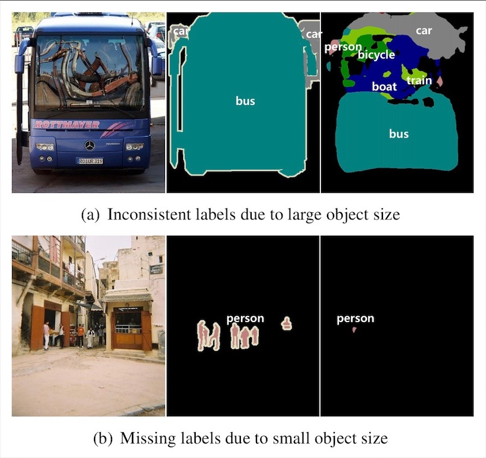
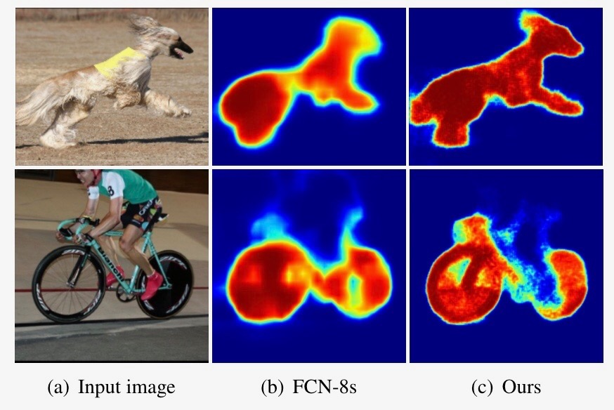
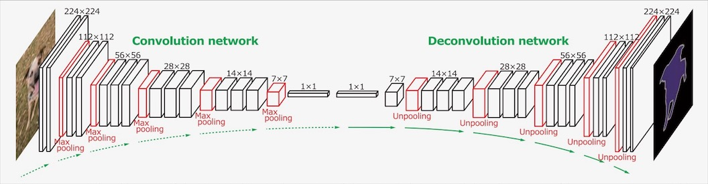
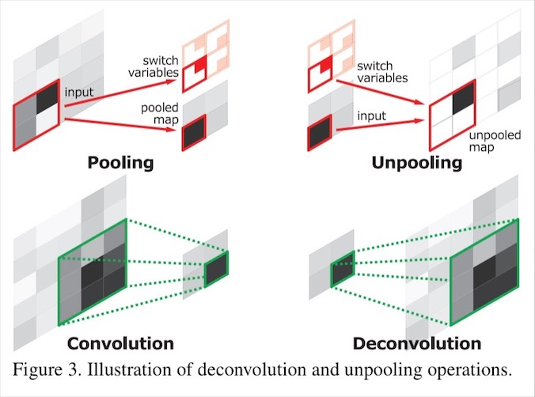
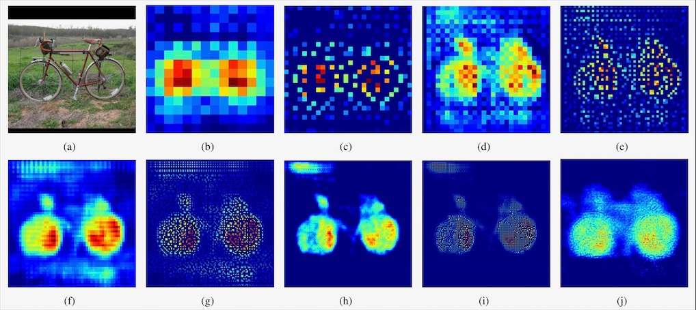
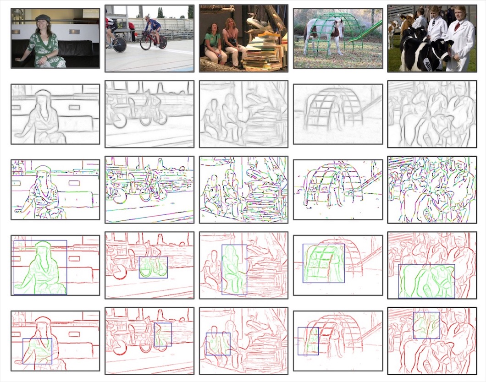
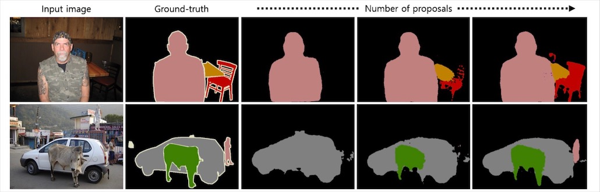
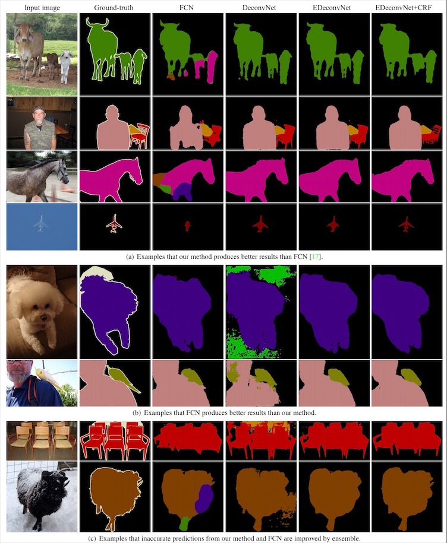

Learning Deconvolution Network for Semantic Segmentation
Noh, H., Hong, S., and Han, B. Learning Deconvolution Network for Semantic Segmentation. ICCV, 2015.
이번 논문은 앞서 다뤘던 Fully Convolutional Networks와 같은 년도(2015)에 다른 학회(FCN은 CVPR, 본 논문은 ICCV)에 발표된 논문입니다. FCN이나 이후에 다룰 UNet보다는 다소 인기가 적었지만, FCN이 가진 한계를 잘 짚어주셨다는 점에서 공부에 도움이 되었습니다.
FCN의 문제점
크기에 약하다

위의 예시들처럼 FCN의 추론 결과를 보면, 대상 물체가 너무 큰 경우(a)에는 파편화되고, 너무 작은 경우(b)에는 배경으로 무시되는 경향이 있습니다. FCN에서는 receptive field(상위 레이어의 한 지점에서 참조하는 하위 레이어의 영역)의 크기가 고정되어, 단일 배율(scale)만을 학습하는 것이 이 문제의 원인이라고 본 논문은 지적합니다. 여러 레이어의 결과를 조합하는 skip 구조가 이러한 현상을 완화시켜주기는 하지만, 근본적인 해법은 아니라는 주장입니다.
디테일에 약하다

FCN이 비록 기존 기법들에 비해 큰 발전을 이루었지만, 세부적인 영역을 찾아내는 데에서는 아직 개선의 여지가 있다고 이 논문은 보고 있습니다. FCN에서는 deconvolution에 들어가는 입력부터 이미 세부 묘사가 떨어지고, deconvolution 과정 자체도 충분히 깊지 않고 너무 단순하다고 말합니다.
논문의 해법
네트워크 구조

부족하면 더 넣으면 됩니다. FCN에서는 CNN의 결과를 입력 이미지의 원래 차원으로 확대(upsampling)하는 데에 deconvolution을 사용했지만, 이 논문에서는 deconvolution 시 차원을 유지하는 방법으로, CNN(논문에서 사용한 건 VGG-16)의 convolution만큼 레이어 숫자를 늘렸습니다. 결과적으로 거울에 비춘 모양이 되었습니다.

CNN으로 인해 원래 이미지보다 축소된 차원 크기는 unpooling으로 복원합니다. 여기서 unpooling이란 CNN의 max pooling 시의 위치 정보를 기억했다가, 원래 위치로 그대로 복원해주는 작업입니다.

그 효과는 위의 그림과 같습니다. (b)에서 (c)로 갈 때의 unpooling에 의해, 해상도가 커지는 대신 신호가 흩어져서 희소(sparse)해집니다. 이것을 (c)에서 (d)로 deconvolution을 거치면, 디테일을 살려내면서 신호가 고르게 밀집(dense)됩니다. 이러한 과정이 반복되자 노이즈도 점차 자연스럽게 사라지는 것을 볼 수 있습니다.
학습 및 추론 방식

단일 데이터셋에서 다양한 크기의 사례들을 학습하기 위해, 논문에서는 edge-box라는 object proposal 알고리즘을 사용하여 무언가 있을만한 영역을 다양한 크기의 상자로 골라냅니다. 학습 시에는 우선 실제 정답이 가운데에 들어가도록 잘라낸(crop) 이미지들로 1차 학습을, 그 다음 edge-box의 결과물 중 실제 정답과 잘 겹치는 것들을 활용하여 조금 더 심도있는 2차 학습을 진행합니다.

이렇게 학습에 사용된 edge-box는 추론 시에도 사용되는데, 추론 시 사용하는 object proposal의 수(상자 수)를 증가시킬 수록 성능은 좋아진다고 합니다. 물론 그만큼 계산량과 시간은 늘어납니다.
결과

이렇게 세심하게 설계되고 학습된 결과는 FCN이 실수하는 물체들도 보다 세밀하게 잘 찾아내는 모습을 보입니다. 다만 FCN이 잘 맞추는 곳에서 실수를 할 때도 있는데, 결국 둘을 앙상블하여 conditional random field로 후처리하면 두 가지 모델을 모두 뛰어넘게 되어, FCN과 상호 보완적인 관계에 있다고 논문은 맺습니다.